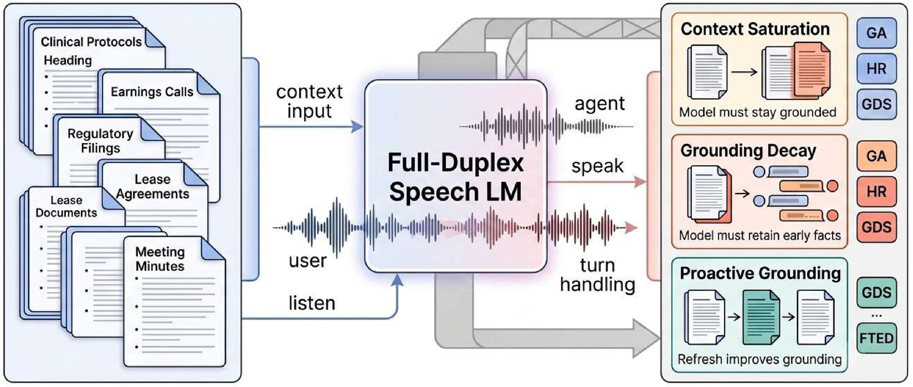
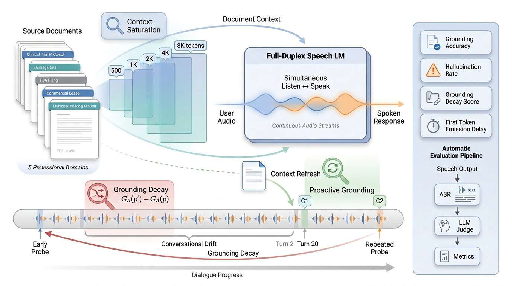

Benchmarking Document Grounding and Hallucinations in Full-Duplex Voice Agents

Overview
Full-duplex speech agents listen and speak simultaneously, enabling low-latency, natural interaction. Yet as they enter professional settings, fluency is not enough: users expect answers grounded in task-specific documents — clinical protocols, earnings calls, contracts, regulatory filings. Under contextual load, a fluent but ungrounded spoken reply can deliver a hallucination with the same prosodic confidence as a grounded one. DSB-DG is a streaming-native benchmark that isolates when full-duplex models retain, lose, or recover access to external context.

The DSB-DG framework — document context and spoken queries drive a full-duplex speech model, evaluated by three complementary protocols and a fully automatic ASR → LLM-judge → metrics pipeline.
Three complementary protocols
Each protocol holds the question and its supporting evidence fixed while varying one stressor, so changes in grounding can be attributed to that stressor alone.
Does grounding degrade as the document grows from ≈500 to 8,000 tokens? The same spoken question is asked under five prefix-consistent context tiers.
Grounding Accuracy · Hallucination RateDoes the model forget document facts over a 20-turn conversation? A probe→distractor→repeat schedule replays identical early probes as late probes.
GDS = GA(A′) − GA(A)Does re-injecting the document mid-conversation help — or overwhelm a limited context window? No / single / multiple refreshes.
Δlight · Δheavy · ΔmarginalBenchmark design
Candidate QA pairs are generated from restricted document context, then passed through a three-stage adversarial verification pipeline — answerability, ambiguity, and cross-tier checks — yielding 1,636 verified QA pairs (1,341 grounded + 295 unanswerable). All user turns are spoken (16 kHz mono, fixed TTS voice); answers are transcribed with Whisper-large-v3 and scored by a GPT-4o grounding judge validated at >90% agreement with human annotation.
| Domain | # Docs | # QA | Avg Q/Doc | Document characteristics |
|---|---|---|---|---|
| Clinical Trials | 10 | 391 | 39.1 | Structured protocols, eligibility criteria, clinical endpoints |
| Earnings Calls | 10 | 314 | 31.4 | Financial reporting, analyst Q&A, dense numerical content |
| FDA 510(k) | 10 | 292 | 29.2 | Regulatory filings, device specifications, standardized structure |
| Commercial Leases | 10 | 358 | 35.8 | Contract clauses, cross-references, legal reasoning |
| Municipal Minutes | 10 | 281 | 28.1 | Procedural narratives, motions, amendments, voting records |
| Total | 50 | 1,636 | 32.7 | + 20 multi-turn spoken dialogues |
Table 1 — Domain composition and dataset statistics of the released v2 benchmark.
📦 Available on Hugging Face:
puneetm/DSB-DG
— benchmark.json, five nested document tiers, 1,636 spoken-question clips, and 20 conversation
scripts. (Access-gated during review; downloadable with an HF_TOKEN.)
Results
We evaluate a cascaded oracle (Whisper→GPT-4o→TTS), two strong real-time systems (GPT-Realtime, MiniCPM-o), and three open-weight systems (Ultravox-v0.6-Qwen3-32B / UV-32B, SALMONN, Moshi). Increasing document length produces distinct failure regimes rather than a common degradation curve.
Cascaded holds 93.6% GA at the 2k tier; GPT-Realtime (89.3%) and MiniCPM-o (91.8%) approach it under real-time speech generation.
Grounding collapses from 62.1% → 13.1% at T3→T4 (−49 pp), with hallucination surging to 48%: the model keeps talking after losing the document.
Among competent grounders, UV-32B shows the largest conversational forgetting: GDS −11.7.
Fails to produce document-grounded answers across every tier (~0% GA); an effective context budget of only a couple hundred tokens.
Experiment A · GA (%) vs. context tier
Experiment A · HR (%) vs. context tier
Table 2 — GA (%) across token-length tiers. Moshi–EC is the extractive-compression variant restricting injected context to query-relevant content.
GDS = GA(A′) − GA(A) over 20-turn conversations; negative = forgetting.
GA under no / single / multiple refreshes. Re-injection helps strong systems, hurts smaller backbones.
Table 5 — First-Token Emission Delay (FTED) and Quality-Adjusted Latency (QAL = FTEDp50·(1−GA@T3)). Cascaded and GPT-Realtime dominate the quality-adjusted frontier; Moshi is fast but does not ground.
Citation
@inproceedings{mathur2026duplexspeechbench,
title = {{DuplexSpeechBench -- Document Grounding}: Benchmarking Document
Grounding and Hallucinations in Full-Duplex Voice Agents},
author = {Mathur, Puneet and Lipka, Nedim and Jin, Zeyu and Manocha, Dinesh},
year = {2026}
}